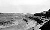

downcutting

Definition: Downcutting, also called erosional downcutting, downward erosion or vertical erosion, is a geological process by hydraulic action that deepens the channel of a stream or valley by removing material from the stream's bed or the valley's floor. The speed of downcutting depends on the stream's base level, the lowest point to which the stream can erode. Sea level is the ultimate base level, but many streams have a higher "temporary" base level because they empty into another body of water that is above sea level or encounter bedrock that resists erosion. A concurrent process called lateral erosion refers to the widening of a stream channel or valley. When a stream is high above its base level, downcutting will take place faster than lateral erosion; but as the level of the stream approaches its base level, the rate of lateral erosion increases. This is why streams in mountainous areas tend to be narrow and swift, forming V-shaped valleys, while streams in lowland areas tend to be wide and slow-moving, with valleys that are correspondingly wide and flat-bottomed. The term gradient refers to the elevation of a stream relative to its base level. The steeper the gradient, the faster the stream flows. Sometimes geological uplift will increase the gradient of a stream even while the stream downcuts toward its base level, a process called "rejuvenation." This happened in the case of the Colorado River in the western United States, resulting in the process that created the Grand Canyon.
Source: Wikipedia
Wikipedia Page (Something wrong with this association? Let us know.)
Wikidata Page (Something wrong with this association? Let us know.)